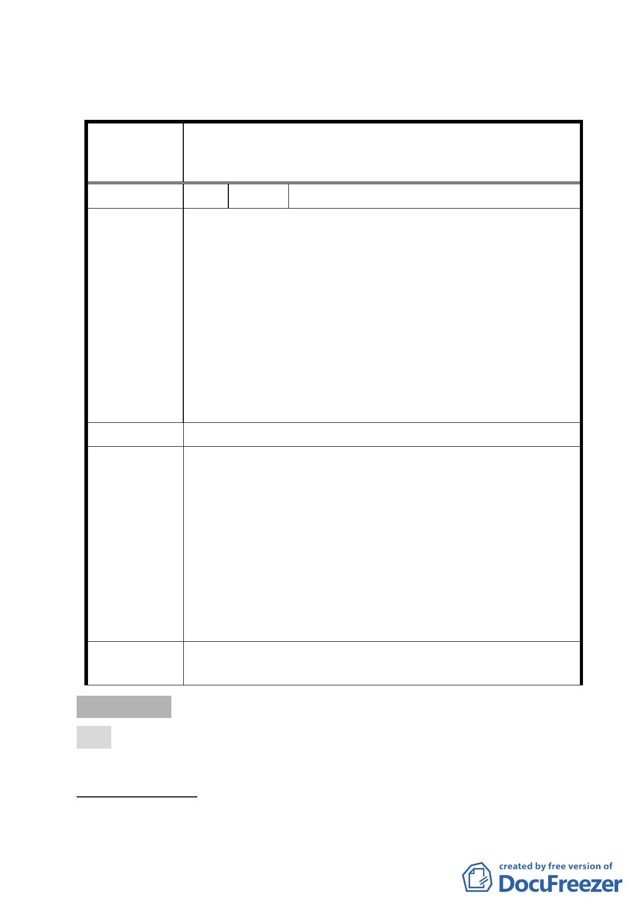

都發局循行政程序簽報市府。
臺北市都市計畫委員會公民或團體所提意見綜理表
變更臺北市大安區龍泉段一小段 393 地號等 17 筆土地第三
案 名 種住宅區、第三之二種住宅區為第三種住宅區（特）、第三
之二種住宅區（特）細部計畫案
編 號 1 陳情人 尤清
建議位置：台北市大安區溫州街 46 巷 4 號之 4、之 6
一、溫州街 46 巷 4 號（共八戶）現有房屋實際合法的容積
率在 280～300 之間，請未來都更應獎勵提高到容積
300。
二、大學公園維護很好，在規劃地下停車場的出入口不宜設
陳情理由
在 46 巷，以策老人兒童安全。
三、現住戶有獨居老人，請輔（協）助安置。
四、租金補貼，請考量溫州街房租水準。
五、請潤泰設計及施工及結構方面特別重視安全美觀。
六、請市政府加快審議流程，也請市政府檢討都計審議工作
流程時間。
建 議 辦 法 （同上）
一、未來容積獎勵額度須視實施者整體規劃設計及提出之開
發建築計畫而定，並將依臺北市都市設計及土地使用開
發許可審議委員會及都市更新及爭議處理審議會結果為
準。
市 府 回 應 二、地下停車場的出入口初步規劃設置於辛亥路一段，惟實
說 明 際宜兼交通狀況並經都市設計審議。
三、有關住戶安置、租金補貼及設計施工之安全美觀，係屬
更新事宜，後續由更新處依都市更新條例相關規定協助
辦理。
四、本案係本府重大政策，相關審議作業時程當予協助。
委 員 會 決 議 同市府回應說明。
審議事項 四
案名：劃定臺北市中山區北安段三小段 818 地號等 12 筆土地為更
新地區
案情概要說明：
一、 計畫範圍：本更新地區基地東北側臨文湖線捷運大直站3號出
- 10 -